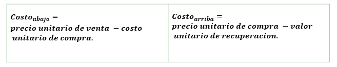

Tipos de productos con demanda incierta.
Existen 2 tipos de productos con demanda incierta:
| Producto Estable | Producto Perecedero |
|---|---|
| Conservara sus ventas en forma indefinida por lo que no hay una fecha establecida para agotar el inventario. | Se puede tener en el inventario solo un periodo limitado antes de que no se pueda vender. |
Productos Perecederos
Ejemplos de Productos Perecederos:
- Publicaciones como revistas y periódicos.
- Flores que vende una florería.
- La elaboración de comida fresca preparada en un restaurante.
- Frutas y vegetales que se venden en un supermercado.
- Arboles de navidad.
- Ropa de temporada.
- Automóviles nuevos al final del año que corresponde al modelo.
- Reservaciones en una línea área para un vuelo especifico, puesto que los asientos disponibles en el vuelos representan el inventario de un producto pereceros.

Supuestos del modelo.
- Cada aplicación involucra a un solo producto perecedero.
- Cada aplicación incluye a un solo periodo dado que el producto no puede venderse después.
- Se puede disponer de cualesquiera unidades que queden del producto al final del periodo.
- La única decisión a tomar es cuantas unidades pedir.
- La demanda para retirar unidades del inventario y venderlas es incierta.
- Si la demanda excede la cantidad a ordenar, se incurre en un costo por subordenar. En particular, el costo por cada unidad faltante es:
- Si la cantidad a ordenar excede la demanda, se incurre en un costo por sobreordenar.
Regla de pedidos para el modelo.
- Elegir la menor cantidad de pedido que proporciona al menos ese nivel de servicio.
Donde:
